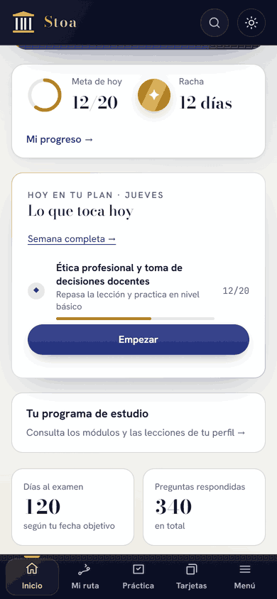

Así se ve la explicación dentro de Stoa. Captura real de la plataforma · Datos de ejemplo.

La misma plataforma, adaptada a tu celular. Captura real de la plataforma · Datos de ejemplo.
III / UNA PREPARACIÓN QUE PUEDES RETOMAR
En tu escritorio. En ese rato libre. En tu propio ritmo.
Tu estudio sigue contigo. Entra con el mismo correo desde tu celular o computador y retoma tu progreso cuando tengas conexión.
01 Tu semana, con prioridades
Diagnóstico, ruta y plan semanal para darle un lugar al estudio entre tus responsabilidades.
02 Lo difícil, a la vista
Cuaderno de errores, repaso exprés y progreso para decidir qué necesitas volver a trabajar.
03 La práctica, con contexto
Lecciones, explicaciones, normograma y biblioteca para conectar una decisión con sus fundamentos.
04 Más allá de la prueba escrita
Premium incluye psicotécnica, calculadora orientativa de antecedentes y ensayo de entrevista con grabación en tu dispositivo.
Cada herramienta orienta tu preparación. La convocatoria de tu plaza define etapas, requisitos y ponderaciones; los simulacros no reproducen una prueba oficial.
Consulta el contenido de tu especialidad antes de confirmar la compra.
Si la CNSC fija la prueba escrita después del 1 de diciembre de 2027, ampliaremos el acceso sin costo hasta 30 días después de esa fecha.
Qué organiza Stoa para que puedas dedicarte a estudiar
Tu preparación
Con Stoa Premium
Estudiando por tu cuenta
Casos
Resuelves casos y contrastas la explicación de cada alternativa.
Eliges ejercicios y contrastas sus explicaciones y fuentes.
Normas
Consultas el normograma, con texto literal y referencia en los artículos que lo incluyen.
Buscas cada norma, compruebas su versión y seleccionas los artículos para repasar.
Plan semanal
La ruta propone prioridades y distribuye el estudio según tu avance.
Organizas tu calendario y decides qué repasar a partir de tus resultados.
De tu cuenta a tu acceso.
01
Creas tu cuenta y confirmas tu correo.
02
Revisas tu especialidad, cobertura y disponibilidad.
03
Pagas desde Stoa en el checkout de Wompi.
04
Stoa confirma el pago aprobado y habilita el acceso asociado a tu cuenta.
Si el pago queda pendiente, consulta su estado en tu cuenta antes de intentar otro. No necesitas usar un enlace público de pago ni enviar datos de tu tarjeta a soporte.
UN PROYECTO INDEPENDIENTE
Quién está detrás de Stoa.
Una preparación que puedas entender, contrastar y mejorar con tus preguntas.
El razonamiento a la vista
Stoa es un proyecto independiente de preparación para el Concurso Docente en Colombia. Creamos casos de práctica y explicaciones para estudiar decisiones de aula. Las referencias incluidas permiten contrastar sus fundamentos; cuando un dato requiere confirmación, se identifica como «por confirmar».
Cómo se elabora el contenido
Creamos lecciones, casos y explicaciones propios a partir de referentes del Ministerio de Educación y documentos oficiales de la CNSC. Para practicar decisiones de aula, tomamos como antecedente el formato de juicio situacional documentado en la guía de 2022. Diferenciamos esos antecedentes de las reglas de la convocatoria vigente, y cada referencia te permite contrastar lo que estudias. Los temarios de Stoa son orientativos.
Tu duda también ayuda a mejorarlo
Si una pregunta te genera dudas, envíanos su título o identificador y la fuente que quieres contrastar. Revisar una explicación también forma parte de estudiar con criterio.
Son ejercicios propios de preparación. Stoa no está afiliada a la CNSC ni al Ministerio de Educación y no garantiza aprobación, puntaje o nombramiento. Consulta las condiciones de uso.
EMPEZAR Y ESTUDIAR
¿Qué es Stoa y para quién es?
Es una plataforma de estudio autónomo para personas que se preparan para el Concurso Docente en Colombia. Reúne ruta de estudio, lecciones, casos explicados y seguimiento. Puedes explorar perfiles de docente de aula, preescolar, primaria, orientación y cargos directivos; la disponibilidad de Premium depende de su cobertura propia.
¿Qué puedo hacer gratis? ¿Necesito tarjeta?
No necesitas tarjeta. Aquí puedes resolver tres casos de muestra sin registrarte. En tu cuenta puedes elegir tu perfil, consultar el temario y hacer un diagnóstico de hasta 20 preguntas por sesión, con resultado por componente. También puedes estudiar las lecciones y preguntas de muestra disponibles para tu perfil, organizar tu plan semanal y seguir tu avance. Premium amplía el acceso al contenido publicado de una especialidad y la base común. Consulta tu cobertura antes de pagar.
¿Qué especialidades puedo elegir?
Abre el explorador de perfiles para ver los temas orientativos y la cobertura cuando esté disponible. Desde tu cuenta puedes explorar el temario de tu plaza y confirmar el contenido antes de comprar.
¿Es un curso en vivo o puedo estudiar a mi ritmo?
Es una plataforma para estudiar a tu ritmo. Este plan no incluye clases en vivo ni tutorías individuales. Puedes organizar tu semana, hacer un repaso exprés o dedicar una sesión a un tema. Tú decides el tiempo; la práctica y los simulacros ayudan a organizarlo.
¿Funciona en celular y computador? ¿Se guarda mi avance?
Sí. La interfaz se adapta a ambos espacios. Usa tu mismo correo: las respuestas y el avance se guardan en tu cuenta cuando tienes conexión. También puedes instalar Stoa como aplicación web; el contenido ya guardado puede consultarse sin conexión. Autenticación, pagos y sincronización necesitan internet.
COBERTURA, COMPRA Y LICENCIA
¿Qué cubre exactamente un pago de $199.900?
Un pago único de $199.900 COP da acceso Premium al contenido publicado de una especialidad —área, nivel o cargo, según tu perfil— y a la base común, hasta el , hora de Colombia. Incluye las herramientas indicadas en el plan. Consulta la cantidad de lecciones y preguntas de tu perfil antes de pagar: la cobertura no es igual para todas las áreas.
¿Puedo cambiar de especialidad o compartir la cuenta?
La cuenta es personal e intransferible. Revisa tu elección antes de comprar: la compra fija la especialidad en tu cuenta. No da acceso a otras áreas ni es una licencia para un grupo de profesores. Sí puedes usar tu propia cuenta en celular y computador. Puedes actualizar tus datos y el contexto de tu plaza.
¿Cómo pago y cuándo se habilita mi acceso?
Entra en tu cuenta de Stoa, revisa el perfil y su cobertura y abre Premium. Si está disponible, la plataforma crea una orden asociada a tu cuenta y te lleva al checkout de Wompi. Stoa habilita el acceso cuando confirma la transacción aprobada y sus datos. Un pago pendiente no activa el plan; revisa su estado antes de repetirlo. Si necesitas ayuda, contacta a soporte con la referencia, sin enviar información de tu tarjeta.
¿Por qué el comercio aparece como Zimplichat en Wompi?
El comercio sigue figurando como Zimplichat mientras Wompi tramita el cambio a Digital Evolution. Inicia siempre el pago desde tu cuenta de Stoa y comprueba el valor y la referencia antes de confirmar. Si algún dato no coincide, consulta a soporte.
¿Hay renovación automática? ¿Qué pasa si se aplaza la prueba?
No hay renovación automática: Premium es un pago único con acceso hasta el . Si la CNSC fija la prueba escrita después del 1 de diciembre de 2027, se amplía sin costo hasta 30 días después de esa fecha. Consulta la vigencia de tu suscripción en tu cuenta.
¿Dónde consulto retracto, reclamos y condiciones?
En los términos de uso están las condiciones de compra, retracto y reclamos. Si tienes una solicitud, escribe al canal de contacto allí indicado o a soporte por WhatsApp. Revisa las condiciones antes de pagar.
CONTENIDO Y CONFIANZA
¿Las preguntas son oficiales? ¿Stoa garantiza pasar?
No. Son ejercicios de preparación propios de Stoa. La plataforma no está afiliada a la CNSC, al Ministerio de Educación ni a la entidad que aplique la prueba y no garantiza aprobación, puntaje ni nombramiento. Los resultados de práctica orientan tu estudio, no predicen tu resultado oficial. Consulta requisitos, etapas y fechas en la convocatoria de la CNSC y en la OPEC de tu plaza.
¿Qué pasa con mis datos y con los datos de pago?
Tu correo y perfil permiten gestionar el acceso; tus respuestas y avance permiten dar seguimiento al estudio. Wompi procesa los datos del medio de pago: Stoa conserva la referencia y el estado, no los datos de tu tarjeta. Las grabaciones de ensayo de entrevista se quedan en tu dispositivo. Consulta responsable, finalidades y cómo ejercer tus derechos en la política de datos personales.
¿Cómo pido ayuda o aviso de un error?
Escribe al WhatsApp +57 313 324 7071. Para un problema de contenido, indica el título o identificador de la pregunta, qué parte genera la duda y, si la tienes, la fuente que permite contrastarla. Para pagos, usa la referencia de la transacción. Nunca envíes tu contraseña ni los datos de tu tarjeta.